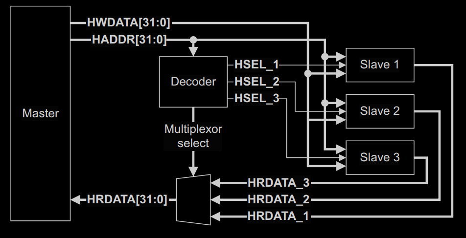
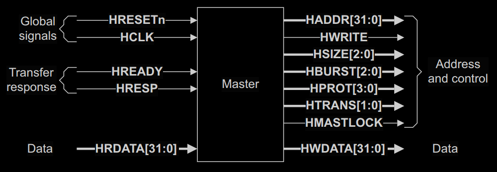
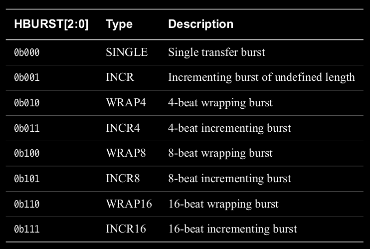
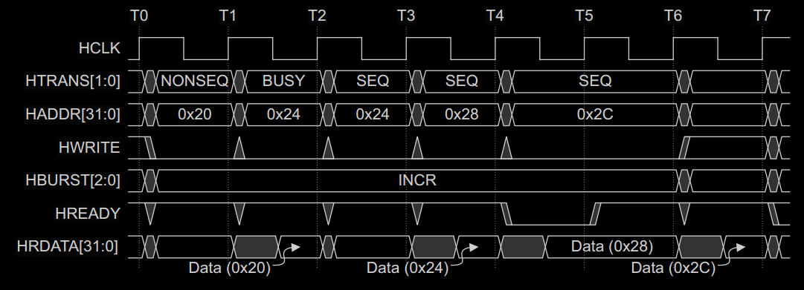

AHB相较于APB要复杂一些。它主要用于桥接主机与各个高带宽从机，例如存储器，数据线也可以从2^6扩展到2^10位。
和APB一样，AHB的每次信息传输也需要至少两个周期，分为寻址阶段和数据阶段，类似于APB中的准备和回应阶段。
1. interconntection between master and slave
先看一下AHB中主丛机之间的连接情况，有一个整体的概念。

从图里可以简单地看到，master和多个slave之间采用地还是传统的地址片选＋数据线共享的模式。
片选采用的是高位地址偏移的解码方式，即HADDR的高位会用于构建片选信号。HADDR的低位用于片选到的slave进行内部偏移。
对于数据线:
- 写数据线。写数据线对所有slave可见，只有被片选到的slave会被写入。
- 读数据线。读出数据各自独立，但最终会被片选信号mux到一个汇总的读数据总线上。
总结来说，从master侧来看，它只会看到一个HADDR，HWDATA，HRDATA。
从slave侧来看，它只会看到一个片选HSEL_x，一个内部的偏移地址(HADDR的低位)，一个HWDATA，一个HRDATA_x。
HADDR-HSEL_x，HRDATA_x-HRDATA之间的转换由decoder和mux来执行。
2. master pin map

细看master侧的具体信号分布，HRDATA和HWDATA上面的连接阶段已经看过。剩下的信号可以按照图中的分组来分析。
2.1 global signals
- HCLK. 时钟信号，没什么特别的。
- HRESETn. 低电平触发复位信号，没什么特别的。
2.2 address and control signals
HADDR. 地址信号，没什么特别的。
HWRITE. 读写控制信号，没什么特别的。
HBURST. 突发模式(连续发送模式)选择。突发模式中，发送一次的单位称为beat，每个beat的具体数据大小看数据线的位宽。例如一个4-beat的burst，每个beat是2-byte，那么一次burst传输就是8-byte。burst的模式可以是:单发(一个个发)，连发(包括4连发，8连发，16连发)，回卷发(发一圈后从头来重新再发)。具体的可以看下表。

值的注意的是回卷的模式下，它是以N个byte作为一个区段，发送地址只在区段内回卷，N为回卷循环一次发送的总byte数。例如上面的例子，N=8,那么区段就会以8个byte来做分割，分割后的地址是0-7, 8-15, …. 如果回卷突发的起始地址不是某一区段的起始地址，如0,8,16,… 那么回卷就会从区段内的给定地址开始直到N byte发完结束。比如，给定5为起始地址，那么所在区段为0~7, 8-byte的回卷地址为: 5,6,7,0,1,2,3,4.HSIZE. 传输位数大小。表示一个HWDATA/HRDATA中有多少位是使用的。和突发模式结合时，总突发位数＝beat个数*2^(3+HSIZE)
HTRANS. 传输类型信号。此信号用于指明当前的这一回合信息传输是什么类型的。总共有IDLE，BUSY，NONSEQ，SEQ四种类型。
IDLE: 当前的这一回合传输是无效的，可以被忽略。
BUSY: 这个类型只在突发模式且不限长度的INCR模式才使用。指明当前周期的突发传输无效，用于简单暂停突发传输。
NONSEQ: 用于指明当前周期的传输为单发或连发的第一个beat。
SEQ: 用于指明当前周期的传输为连发中的非第一个beat，或说后续beat，其地址和上一个beat相关。HMASTLOCK. 这个信号类似于一个互斥锁和信号旗，用于声明某一master占据总线。在占据过程中，信息传输不能被打断，直到此master将HMASLOCK清零。
HPROT. 这个信号类似于APB中的PPROT，用于补充信息传递中的附加内容。
2.3 transfer response
- HREADY. 此信号类似于APB中的PREADY信号，用于指明信息传递完毕，指令结束
- HRESP. 此信号类似于APB中的PSLVERR信号，用于反馈信息传输是否正确。
3. slave pin map
slave的信号和master差不多，显著的区别有两个，一是多了一个HSEL_x，这个上面已经看过了。另一个是HREADYOUT，这个信号其实就是master侧的HREADY经过mux之前的信号。多个slave的HREADYOUT信号经过mux得到一个HREADY信号。
4. 小结
总的来看，AHB和APB基本功能类似，AHB更像是APB的一个高级扩展，多了一些信号。
AHB和APB一样，信息传输由HSEL_x来表明，每次传输有两个阶段，寻址阶段和数据阶段，数据阶段可被延长且由HREADY作为结束。
除此之外，寻址阶段还要看HTRANS，HBURST，HSIZE信号。HTRANS指明当前的传输的发送类型。HBURST及HSIZE指明了是否使用突发模式和突发大小。
具体步骤可以大致看为:
- 看HSEL_x得知是否有传输正在进行
- 看HTRANS得知当前的传输类型
- 看HADDR，HWRITE得知读写指令
- 看HBURST，HSIZE得知如何进行突发模式
- 看HREADY，HRESP得知传输结束和slave的反馈情况
5. BUSY类型的例子

这个BUSY只是在burst模式下的INCR用的.
因为burst模式下，读写操作设定是不变的. 仅仅靠slave的一个HREADY信号时不足以暂停burst模式. 所以加入这个BUSY信号. 去暂停burst.
以上图为例.
T0: master放好burst的起始数据, 地址, 读操作.
T1: slave收到NONSEQ，得知当前周期是接下来burst的第一个周期或者单发模式的单独周期。且操作指令为读指令，地址在0x20，slave在本周期末将读数据准备好并令HREADYOUT=1.
T2: 虽然master看到HREADY=1, 但同时发出了BUSY. 那么master不接数据且stall本周期的操作，保持地址.
T3: master想恢复工作, 把BUSY变为SEQ，同时接收上一个读指令中slave读出的数据.
T4: master和slave正常继续工作，恢复成正常的pipeline.
T5, T6: slave将HREADY清零，延长了一个周期的数据阶段.